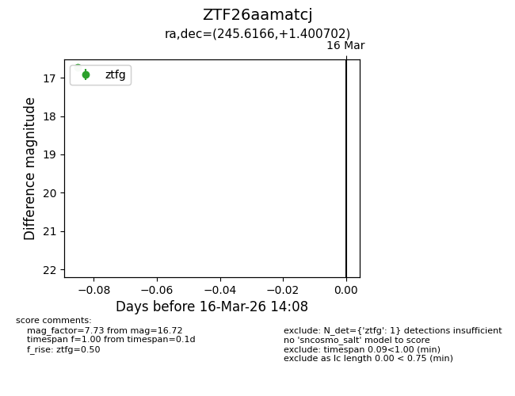
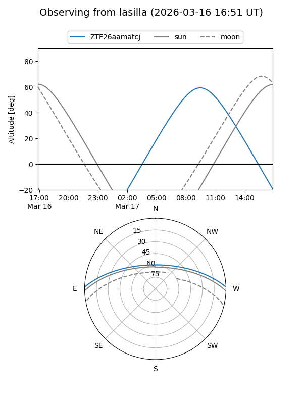
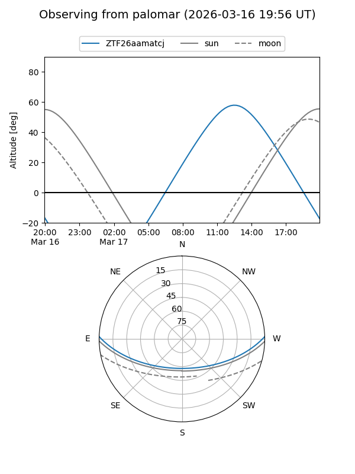

ZTF26aamatcj
Target ZTF26aamatcj at 2026-03-16 14:11
Aliases and brokers:
FINK: link
Lasair: link
ALeRCE: link
alt names
ZTF26aamatcj (ztf,fink_ztf)
Coordinates:
equatorial (ra, dec) = 245.6166,+1.40070
equatorial (HMS+DMS) = 16:22:27.99,+01:24:02.53
galactic (l, b) = (15.2230,+33.33965)
Flags:
Photometry:
last ztfg=16.72
1 ztfg detections
Lightcurve

Visibility


Additional plots